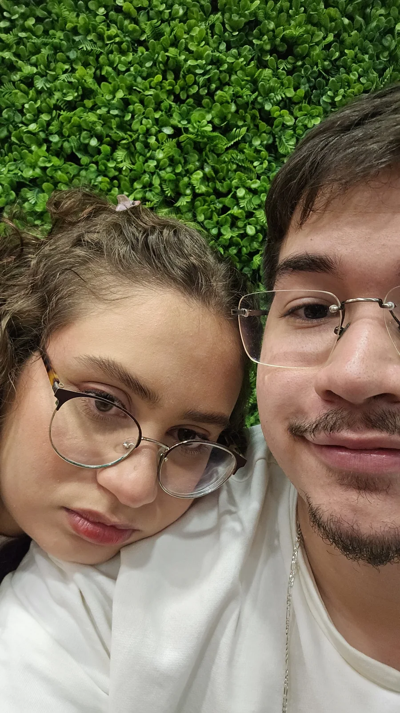
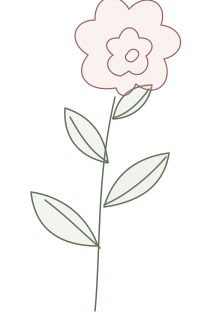
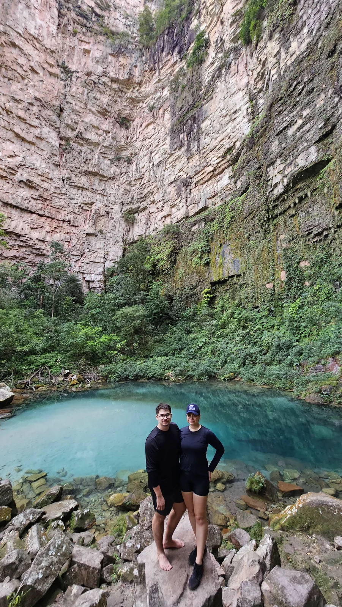
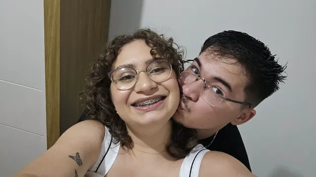
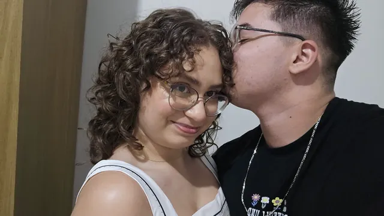
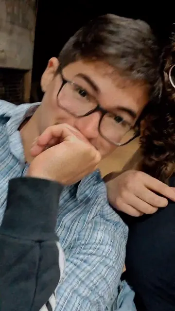

2023
16 DE OUTUBRO · O COMEÇO
Era só uma conversa.
Virou meu mundo.
Uma conversa boba virou rotina. A rotina virou saudade. E, quando eu percebi, você já era a melhor parte dos meus dias.
o primeiro de tantos capítulosGUSTAVO & SABRINA EDIÇÃO DE ANIVERSÁRIO
De uma conversa qualquer ao meu lugar favorito.
Um pedacinho da nossa história, feito pra você.
a minha melhor escolha.


01 / AS PÁGINAS QUE NOS TROUXERAM ATÉ AQUI
Alguns dias viram datas.
Outros viram a gente.
2023
16 DE OUTUBRO · O COMEÇO
Uma conversa boba virou rotina. A rotina virou saudade. E, quando eu percebi, você já era a melhor parte dos meus dias.
o primeiro de tantos capítulos2024
UM ANO · APRENDER JUNTO
“E eu quero que vc aprenda junto cmg.” Entre conversas, carinho e saudade, a gente foi aprendendo a cuidar do que estava construindo.
aquele ponto colorido2025
DOIS ANOS · A NOSSA ESCOLHA
“Feliz 2 anos meu amorrr.” Mais um pedaço da nossa história. O tempo passou e a vontade de dividir a vida com você continuou aqui.
continuar também é amar2026
16 DE OUTUBRO · TRÊS ANOS
Não porque a gente sabe tudo. Mas porque eu ainda quero aprender com você. Três anos de nós — e tanto amor para os próximos capítulos.
e todos os amanhãs também.Uma edição para celebrar nosso terceiro aniversário em 16 de outubro de 2026.

AS PAISAGENS MUDAM. O MEU PAR, NÃO.
Eu gosto dos passeios, das fotografias, de descobrir lugares com você. Mas a parte que eu guardo mesmo é ter você ali.
outra paisagem. a mesma escolha.
ALGUMAS PALAVRAS FICAM PARA SEMPRE
Sabrina · 09.07.2024
Uma frase sua. Um lugar inteiro dentro de mim.
O AMOR TAMBÉM MORA NO JEITO DE FALAR
Os nossos apelidos. As letras a mais.
O “amoreee” no meio do dia.
Algumas conversas mereciam sair da tela e virar uma página só delas.
abre um pedacinho da gente ↗
Até quando é poético, continua sendo a gente.
Aquele ponto colorido na página do nosso passado td preto e branco
Sabrina · 23:40
Poético né
Sabrina · 23:40
A data era nossa. O jeito de comemorar também.
Feliz 2 anos meu amorrr ❤️
Gustavo · 00:10
Feliz 2 anos amoreee
Sabrina · 00:13
Um minuto de diferença, mais um ano pra viver.
Feliz ano novo meu amorrrr
Gustavo · 31.12, 23:59
Feliz ano novo meu amorzinho ❤️
Sabrina · 01.01, 00:00
Te amo muitão
Sabrina · 01.01, 00:00

Mais um Dia dos Namorados. E a mesma certeza.
Feliz dia dos namorados meu bem ❤️
Sabrina · 08:17
Mais um.dia dos namorados com a melhor escolha que ja fiz na vidaaaa
Gustavo · 08:31
Que foi ficar cm vccc
Gustavo · 08:31
Nem sempre precisa de uma grande ocasião.
Quero só fazer coisinhas de namorados com meu nanorado
Sabrina · 10:47
Simmmm
Gustavo · 10:47
02 / O QUE EU GUARDO DA GENTE
Eu guardaria esses pedacinhos.
E todos os que ainda vêm.

Um beijo antes de outro começo.
um instante para reviverO sorriso que eu volto pra ver.Toque em uma memória para ficar um pouquinho nela.
03 / DO MEU CORAÇÃO, PARA O SEU
Tem coisas que eu ainda prefiro escrever.
Essa é uma delas.
16 DE OUTUBRO DE 2026
Três anos. Eu olho pra esse número e penso em tudo que cabe nele. As conversas sem hora pra acabar, as fotos que eu volto pra ver, a saudade aparecendo no meio de um dia qualquer. E você. Sempre você.
Lá no começo, eu não sabia o tamanho que a gente ia ter. Só sabia que queria conversar mais um pouco. Ficar mais um pouco. Agora eu entendo: aquele “mais um pouco” era eu querendo uma vida que tivesse você dentro.
Eu gosto do nosso jeito de falar. Dos “amoreee”, do “te amo muitão”, dessa vontade de fazer coisinhas de namorados. Pode parecer pequeno, mas é ali que eu reconheço a gente. No carinho que cabe numa mensagem no meio do dia.
Tem os passeios, as paisagens, a foto que a gente tira só pra guardar. E tem ficar juntinho sem fazer nada demais. Eu quero os dois. Quero conhecer mais do mundo com você e também ter mais um dia comum do seu lado.
Você continua sendo aquele ponto colorido. Não porque todos os dias são fáceis, mas porque até nos dias difíceis eu encontro motivos pra escolher a gente. No seu jeito, no seu carinho, nessa vontade bonita de aprender junto.
Eu também sei que ainda tenho muito pra aprender. A ouvir melhor, a cuidar dos detalhes, a falar o que sinto sem esperar uma data especial. Quero que você se sinta amada no dia do nosso aniversário e numa terça-feira qualquer.
Se eu pudesse voltar àquela primeira conversa sabendo tudo que sei hoje, eu ficava. Ficava nas madrugadas, nas risadas, na saudade. Escolhia você de novo.
Feliz três anos, meu amor. Obrigado por ser minha namorada, minha melhor escolha e o lugar pra onde meus pensamentos sempre voltam.
Eu escolho você.
E pretendo todos os amanhãs também.
Com amor, Gustavo
04 / A TRILHA DA NOSSA HISTÓRIA
É só começar e eu já penso em você.
Dá o play. Pode ficar mais um pouco.
Flora Matos · a nossa música
A música só começa quando você quiser.
05 / O QUE A GENTE CULTIVA
Cada memória aberta, cada palavra lida,
uma florzinha a mais no nosso jardim.
Um jardim para todos os nossos amanhãs.
O NOSSO PRÓXIMO CAPÍTULO
Três anos são uma parte linda da nossa história.
Eu ainda quero viver muito mais dela com você.